6.4.4*. Приведение общего уравнения кривой второго порядка
к каноническому виду
Пусть кривая второго порядка задана в общем виде:
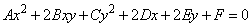
Общий вид
уравнений кривых второго порядка
. (6)
Приведение этого уравнения к каноническому виду
заключается в нахождении системы координат, в которой кривая имеет канонический
вид, геометрически это может быть достигнуто поворотом координатных осей до совмещения
осей симметрии кривой с координатными осями и переносом начала координат в
центр или вершину кривой  . Алгебраически
это приводит к сокращению членов с произведением текущих координат и членов, содержащих
их в первой степени, после применения формул (1) и (3).
. Алгебраически
это приводит к сокращению членов с произведением текущих координат и членов, содержащих
их в первой степени, после применения формул (1) и (3).
. Алгебраически
это приводит к сокращению членов с произведением текущих координат и членов, содержащих
их в первой степени, после применения формул (1) и (3).Преобразуем уравнение (6) поворотом осей координат на угол
 так, чтобы исчезло слагаемое, содержащее
произведение неизвестных. Преобразование поворота
так, чтобы исчезло слагаемое, содержащее
произведение неизвестных. Преобразование поворота
так, чтобы исчезло слагаемое, содержащее
произведение неизвестных. Преобразование поворота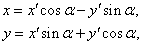
где 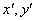 – новые координаты.
Уравнение примет вид:
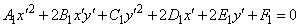,
где
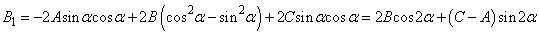.
Найдём угол поворота из условия 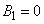:
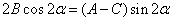.
Если 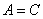, то 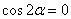 и в качестве угла поворота можно
выбрать 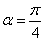;
если , то выбираем 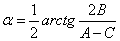.
Опуская штрихи и индексы, после поворота получаем уравнение
вида:
.(7)
Если  и
и  одновременно не равны нулю,
уравнение определяет одну из кривых второго порядка: при 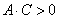 – эллипс (при - окружность), при – гиперболу, при – параболу. Возможны случаи вырождения:
эллипс вырождается в точку или мнимый эллипс, гипербола – в пару пересекающихся
прямых, парабола – в пару параллельных прямых.
одновременно не равны нулю,
уравнение определяет одну из кривых второго порядка: при 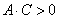 – эллипс (при - окружность), при – гиперболу, при – параболу. Возможны случаи вырождения:
эллипс вырождается в точку или мнимый эллипс, гипербола – в пару пересекающихся
прямых, парабола – в пару параллельных прямых.
и одновременно не равны нулю,
уравнение определяет одну из кривых второго порядка: при 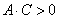 – эллипс (при - окружность), при – гиперболу, при – параболу. Возможны случаи вырождения:
эллипс вырождается в точку или мнимый эллипс, гипербола – в пару пересекающихся
прямых, парабола – в пару параллельных прямых.